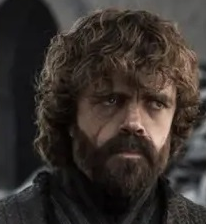
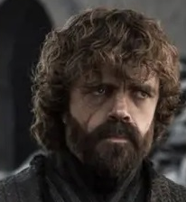

The test website for the famous HBO Show.
In the Game of Thrones, you win or you die. Or at least that's how it was in the books. In the show just watch up to season four.
In the Game of Thrones, you win or you die. Or at least that's how it was in the books. In the show just watch up to season four.
 

Daenerys is the last bastion of a brought-low centuries-old dinasty. She's willing to recover everything her family lost, even after being sold to slavery.
Jon is the bastard son of Ned Stark, and living proof that even the most honorable men are flawed. He'll try to live up to the standards of the family he can never truly belong to.
Cersei is the reigning queen of Westeros. A queen whose father doesn't acknowledge as anything more than a pawn, and whose husband can't even stand. A queen that only her brother loves.
Tyrion is a drunkard, a dwarf, and a genius. He stands to win all realms when his real mother is revealed.
”The common people pray for rain, healthy children, and a summer that never ends. It is no matter to them if the high lords play their game of thrones, so long as they are left in peace. They never are."
-Ser Jorah Mormont, Knight in Exile.
Learn everything about how the showrunners perfectly adapted the first three books and then decided to dip.
Copyright © GRRM & HBO